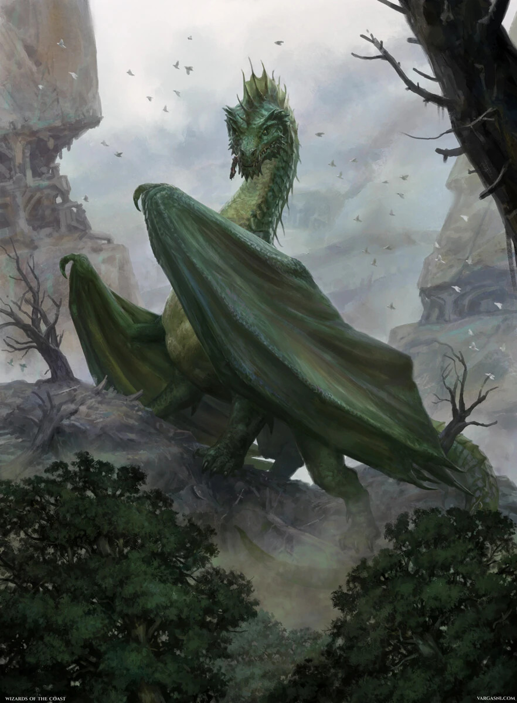
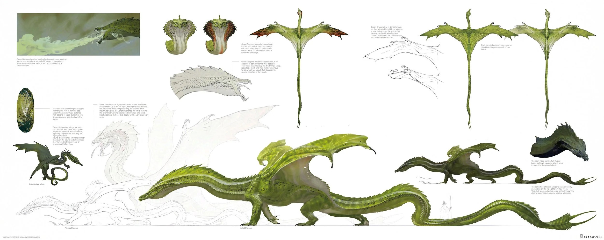

Also known as forest dragons green dragons are a type of chromatic dragon known for their cunning and manipulative nature. Their scales are not fully hardened compared to other chromatic dragons, but this feature grants a greater flexibility that allows better navigation throughout the dense forests they inhabit. Like all dragons, green dragons possess a breath weapon, which takes the form of a highly deadly cone of poisonous vapor.
